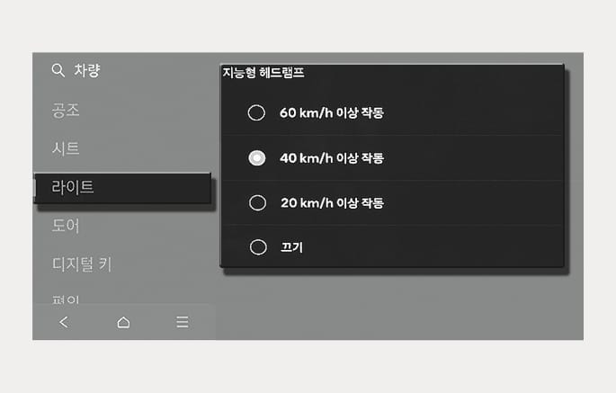

지능형 헤드램프 설정

2C_IFSSettings
시동 'ON' 상태에서 인포테인먼트 시스템의 설정 > 차량 > 라이트 > 지능형 헤드램프를 선택하십시오. 원하는 속도를 선택하면 기능이 켜집니다.
인포테인먼트 시스템은 업데이트로 변경될 수 있습니다. 자세한 내용은 인포테인먼트 시스템 웹 매뉴얼을 참고하십시오.

2C_IFSSettings
시동 'ON' 상태에서 인포테인먼트 시스템의 설정 > 차량 > 라이트 > 지능형 헤드램프를 선택하십시오. 원하는 속도를 선택하면 기능이 켜집니다.
인포테인먼트 시스템은 업데이트로 변경될 수 있습니다. 자세한 내용은 인포테인먼트 시스템 웹 매뉴얼을 참고하십시오.